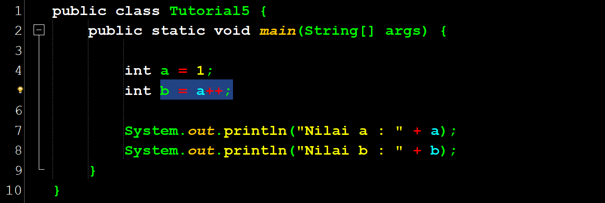
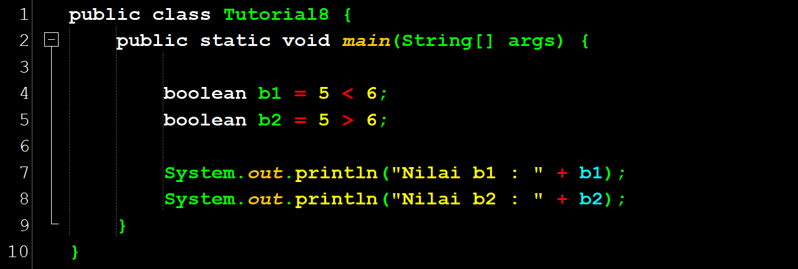
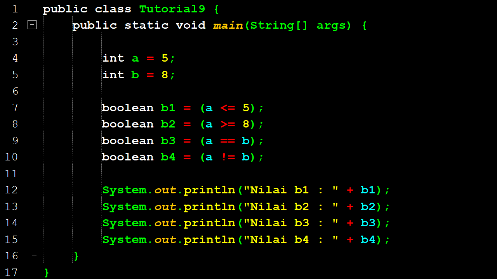
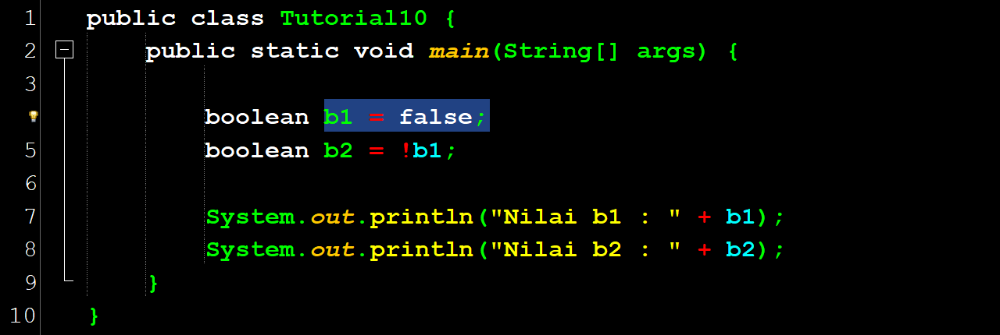
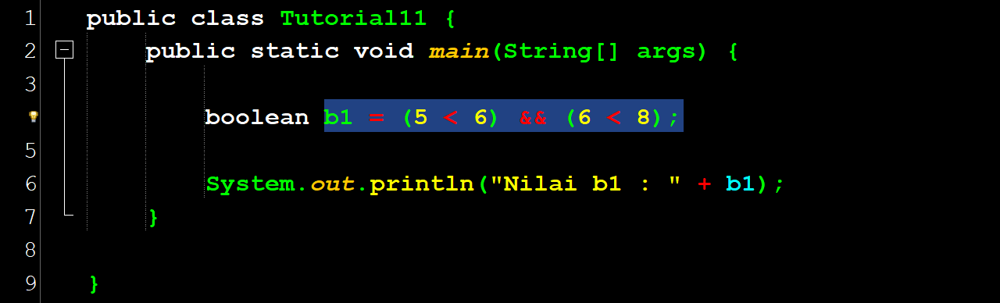
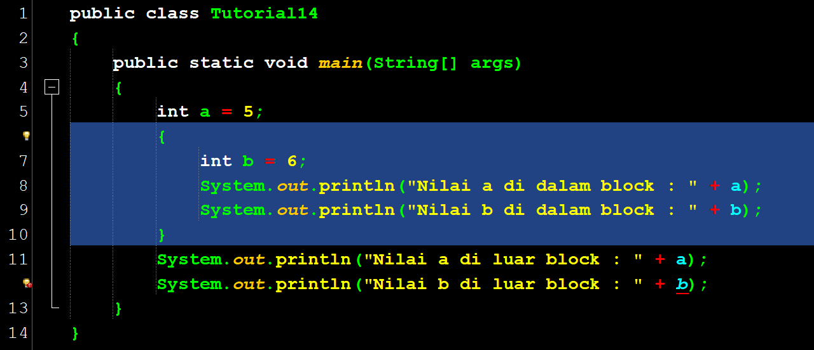

Halo teman-teman
Nah setelah kita mempelajari bagaimana mendeklarasikan suatu variable, menentukan tipe variable dan menentukan nilai dari variable tersebut, mari kita pelajari, apa yang bisa kita lakukan dengan variable-variable tersebut. Seperti sudah dibahas sebelumnya, kita bisa melakukan assignment terhadap suatu variable untuk menentukan atau mengubah nilai dari variable tersebut. Selain assignment, kita juga bisa melakukan operasi lain terhadap suatu variable, bergantung pada tipe dari variable tersebut.
Variable bertipe bilangan
Untuk variable bertipe bilangan, kita bisa melakukan operasi aritmatika seperti penjumlahan, pengurangan, perkalian, pembagian dan modulo. Di Java dan juga mayoritas bahasa pemrograman, berikut ini adalah simbol operasi aritmatika yang umum digunakan:
| Simbol Aritmatika | Fungsi |
|---|---|
| + | Penjumlahan |
| - | Pengurangan |
| * | Perkalian |
| / | Pembagian |
| % | Modulo(Menghitung sisa pembagian) |
Simbol plus berfungsi sebagai penjumlahan, simbol minus berfungsi sebagai pengurangan, lalu simbol star atau bintang berfungsi sebagai perkalian, simbol slash atau garis miring berfungsi sebagai pembagian, dan simbol persen berfungsi sebagai modulo atau menghitung sisa pembagian.
Contoh penggunaan simbol aritmatika pada program Java:

Statement di dalam block-then akan dieksekusi jika kondisi bernilai true, sedangkan statement di dalam block-else akan dieksekusi saat kondisi bernilai false.
Lihat contoh if-then-else di program Java berikut ini:
 - Salin.png)
Variable var1 berfungsi menyimpan hasil dari penjumlahan angka 1 dan 2, yang nantinya memberikan nilai 3. Selanjutnya variable var2 digunakan untuk menyimpan hasil pengurangan angka 9 dikurangi 4 , yang menghasilkan nilai 5. Lalu variable var3 menghitung hasil perkalian dari angka 15 dikali 3, dengan hasil akhirng 45. Dan variable var4 menyimpan hasil pembagian angka 15 dengan 3, yang menghasilkan nilai 5.
Sama dengan matematika umum, operasi di dalam kurung akan dieksekusi terlebih dahulu. Di line 8, var6 akan menghasilkan nilai 1 karena sisa pembagian dari 16 dibagi 3 adalah 1. Di line 9, kita menggunakan bilangan negatif dalam operasi aritmetika kita.
Selain angka, kita juga bisa menggunakan variable di dalam perhitungan kita. Contoh:
int a = 5;
int b = 7;
int c = a + b;
System.out.println(c);Kita menjumlahkan nilai a dan b dan menyimpan hasil penjumlahan di c. Karena a bernilai 5 dan b bernilai 7, maka c akan bernilai 12. Proses ini mirip dengan proses matematika yang umum kita gunakan.
Selain operasi aritmatika, di banyak bahasa pemrograman termasuk Java, disediakan mekanisme untuk menambah nilai variable dengan 1 yang disebut increment dengan menggunakan simbol ++ dan juga mengurangi nilai variable dengan 1 yang disebut decrement menggunakan simbol --. Berikut ini contoh dari proses increment:

Di line 4, kita melakukan increment terhadap variable a dengan menambahkan kode ++ di belakang variable a. Dengan kode seperti ini, nilai a akan ditambah dengan 1 sehingga nilai a akan menjadi 2.
Demikian pula sebaliknya, kita bisa melakukan proses decrement dengan menambahkan tanda -- di belakang variable a, seperti contoh berikut ini:
Kita bisa juga langsung melakukan proses increment / decrement dan assignment secara langsung seperti contoh berikut ini:
Di sini, kita melakukan increment terhadap a dan melakukan assignment terhadap nilai a ke variable b. Akan tetapi, apa yang akan kita dapatkan? Variable a berubah nilainya menjadi 2 sedangkan variable b nilainya tetap 1. Mengapa terjadi demikian? Hal ini terjadi karena nilai variable a di-assign ke variable b sebelum proses increment dilakukan. Lalu akan muncul pertanyaan, bagaimana caranya jika kita ingin melakukan increment terlebih dahulu sebelum kita melakukan assignment? Lihat kode berikut ini dan perhatikan bedanya.
Kita bisa melihat bahwa kita meletakkan tanda ++ didepan variable a. Kode ini akan menghasilkan nilai 2 untuk variable b seperti yang kita inginkan. Dengan demikian, kita harus berhati-hati bahwa kode a++ dan ++a akan mempunyai perilaku yang berbeda dalam program yang kita buat. Hal yang sama berlaku juga untuk proses decrement.
Variable bertipe karakter atau string
Untuk variable bertipe karakter dan string, kita bisa melakukan operasi penyambungan string (concatenation) dengan menggunakan simbol + yang akan menghasilkan string baru hasil dari proses penyambungan tersebut.
Contoh:
String s = “Koding” + “ “ + “Java”;String s sama dengan di dalam dua tanda kutip Koding, plus, di dalam dua tanda kutip spasi, plus di dalam dua tanda kutip Java.
System.out.println(s);Lalu jika kita ingin mencetak variable s maka kita gunakan system dot out dot print line variable s
Selain proses penyambungan string (concatetation), Java juga menyediakan banyak fungsi-fungsi untuk melakukan pemrosesan terhadap suatu string seperti memecah string (substring), mencari suatu character di dalam string, dll.
Variable bertipe Boolean
Boolean adalah suatu data yang hanya mengenal 2 value yaitu true (benar) atau false (salah). Lalu apa fungsi dari Boolean ini? Kita bisa menggunakan variable boolean ini untuk menyimpan hasil pengujian suatu pernyataan apakah kondisi tersebut benar atau salah.
Contoh:
instruksi ini akan menghasilkan nilai variable b1 sama dengan true karena ‘5 < 6’ adalah suatu pernyataan yang benar. Demikian juga sebaliknya jika pernyataan tersebut salah seperti pada variable b2 yang akan menghasilkan nilai false. Selain kurang dari dengan simbol < dan lebih dari dengan simbol >, ada juga simbol lain yaitu, <= yang berarti kurang dari atau sama dengan dan simbol >= yang berarti lebih dari atau sama dengan. Kita juga bisa melakukan pengujian apakah suatu variable sama dengan (equal) suatu nilai dengan menggunakan simbol == (dua tanda sama dengan) atau menguji suatu variable tidak sama (not equal) dengan dengan mengunakan symbol != (tanda seru dan sama dengan).
Berikut ini contoh penggunaan simbol-simbol tersebut:
Variable b1 membandingkan variable a apakah lebih kecil sama dengan lima. Lalu Variable b2 membandingkan variable a apakah lebih besar sama dengan delapan. Selanjutnya variable b3 membandingan variable a apakah sama dengan variable b. Dan variable b4 membandingkan variable a apakah tidak sama dengan variable b.
Untuk variable bertipe boolean ini, kita bisa melakukan beberapa operasi seperti negasi dan penggabungan dengan menggunakan operasi AND, OR atau XOR. Negasi adalah operasi untuk membalik nilai dari true menjadi false atau sebaliknya dari false menjadi true. Operasi yang digunakan untuk melakukan negasi ini direpresentasikan dengan symbol ! (tanda seru) seperti contoh berikut ini:
Variable b1 bernilai false dan kita melakukan operasi negasi terhadap varaible b1 sehingga nilai b2 adalah true.
Selain negasi, kita bisa menggabungkan beberapa kondisi dengan menggunakan operasi pada tipe data boolean yaitu operasi AND (dan) yang direpresentasikan dengan symbol && dan OR (atau) yang direpresentasikan dengan simbol ||. Saat melakukan operasi AND, statement akan dianggap benar jika kedua pernyataan adalah benar (true). Perhatikan contoh berikut ini:
Pernyataan pertama ‘5 < 6’ adalah benar , dan (true)pernyataan kedua adalah ‘6 < 8’ juga benar (true). Karena kedua pernyataan tersebut benar dan kita menggabungkan kedua pernyataan tersebut dengan simbol && (AND), maka keseluruhan pernyataan tersebut adalah benar dan variable b1 akan bernilai true.
Perhatikan tabel untuk operasi AND berikut ini:
| AND | True | False |
|---|---|---|
| True | True | False |
| False | False | False |
True AND True sama dengan True. Jika salah satu pernyataan False (salah), maka hasilnya adalah False. Sehingga True AND False sama dengan False, dan False AND True sama dengan False. Lalu untuk False AND False hasilnnya tetap False
Selain AND (dan), ada juga operasi OR (atau) yang direpresentasikan dengan simbol ||. Perhatikan tabel untuk operasi OR berikut ini:
| AND | True | False |
|---|---|---|
| True | True | True |
| False | true | False |
Operasi OR (atau) akan menghasilkan nilai true jika salah satu pernyataan benar. True OR False sama dengan True, dan False OR True sama dengan True. Jika kedua pernyataan false (salah), maka hasilnya adalah false, sama halnya jika kedua pernyataan True maka hasilnya adalah True. Untuk lebih memahami Operasi OR ini, perhatikan contoh berikut:
Pernyataan pertama ‘5 < 6’ adalah benar (true), dan pernyataan kedua ‘6 > 8’ adalah salah (false). Karena salah satu dari pernyataan tersebut benar, dan kita menggabungkan kedua pernyataan tersebut dengan simbol || (OR), maka keseluruhan pernyataan tersebut adalah benar dan variable b1 akan bernilai true.
Selain AND dan OR, ada juga suatu operasi Boolean yaitu XOR (exclusive OR). Perbedaan XOR dan OR adalah jika kedua pernyataan benar, maka hasilnya justru false. Di Java, XOR direpresentasikan dengan symbol ^. Lihat contoh berikut ini:
Variable b1 akan bernilai false, karena kedua pernyataan adalah true. Lihat table XOR berikut ini:
| AND | True | False |
|---|---|---|
| true | False | True |
| False | True | False |
Operasi XOR (Exclusive OR) akan menghasilkan nilai false jika kedua pernyataan true, begitu pula jika kedua pernyataan false maka hasilnya pun tetap false. Namun jika salah satu pernyataan benar akan menghasilkan nilai True.
Variable Scope
Variable Scope (scope dari suatu variable) adalah suatu area di mana suatu variable bisa kita akses atau gunakan. Di Java, kita bisa mendeklarasikan suatu variable di dalam sebuah block dan variable tersebut hanya bisa digunakan di dalam block tersebut saja, sehingga scope dari variable tersebut hanya di dalam block tersebut saja. Perhatikan code berikut ini:
Variable b dideklarasikan di dalam block yang dibatasi kurung kurawal di baris 6 dan 10. Oleh karena itu, statement di baris ke-12 menghasilkan kesalahan karena variable b hanya bisa diakses di dalam block tersebut seperti statement di baris ke-9. Sedangkan variable a bisa diakses di dalam block karena block di baris 6 hingga 10 tersebut adalah bagian dari block yang lebih besar yaitu block di baris 4 hingga 13.